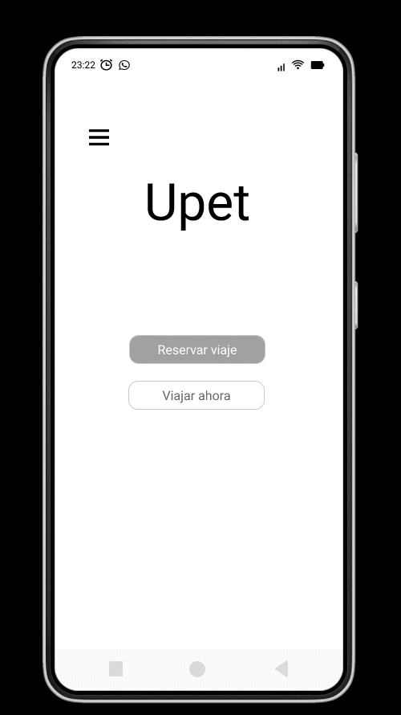

Seguridad
Para garanticar la seguridad de todos los usuarios, Upet permite
una cierta cantidad de pasajeros por auto.
Además obliga a los usuarios a utilizar pretal y correa de viaje
para cada amigo perruno que viaje con Upet.
También permite visualizar la puntuación de cada conductor y
seleccionar el mismo.
¿Cómo me registro?
